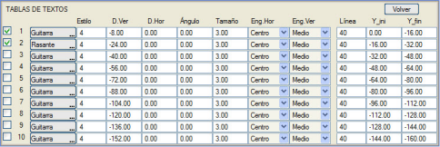

| |
|
BOYKESİT PAFTALARI İÇİN ŞABLONLAR: METİN TABLOLARI
|
Buradan, [BOYKESİT PAFTALARI] → [Metin Tabloları]'nda tanımlanan metin tablolarını kullanmak mümkündür. 
Bir tablonun yansıtılması için, onu etkinleştirmek ve bilgilerinin nerede gösterileceğini belirtmek gerekir: bilgi bandı (gitar) alanında veya kırmızı kot boykesitinde. Birine veya diğerine bağlı olarak, dikey öteleme sırasıyla karşılaştırma düzlemine veya kırmızı kot diyagramına göre olacaktır. Ayrıca, metinlere uygulanacak etiket stili, boyut için ölçek faktörü ve etiketin göreli yerleştirme noktası (yatay ve dikey bağlantılar) belirtilmelidir. İsteğe bağlı olarak bir yatay öteleme ve bir açı da ayarlanabilir. Ayrıca, her metin için tabloda belirtilen başlangıç ve bitiş kilometrelerine karşılık gelen iki dikey çizgi, belirtilen tiple (negatif tipler gösterilmemesine neden olur) ve Y_baş ve Y_son'da belirlenen uzunluğa göre (tablonun bilgi bandında veya boykesitte gösterilmesine bağlı olarak karşılaştırma düzlemine veya kırmızı kota göre) temsil edilecektir. |